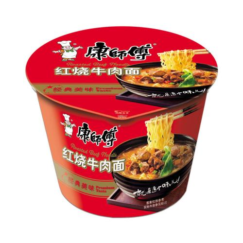
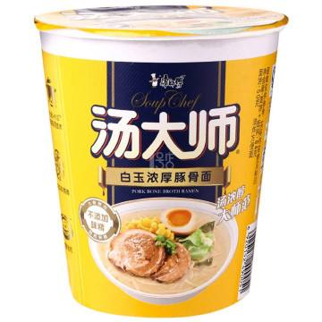
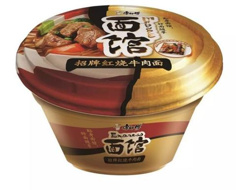

康师傅方便面一直坚持以真材实料为基础，并特别关注各地消费者不同口味变化及需求。以"康师傅"系列产品为首，现已经延伸到： “速达面馆”、“汤大师”、“汤品粉丝”、“大食袋”、“熬制高汤”、“亚洲精选”、 “好滋味”等多种系列产品，满足各类消费阶层的需求。
|

康师傅红绕牛肉面 |

汤大师白玉浓厚豚骨面 |

速达面馆招牌红烧牛肉面 |
购买链接 康师傅 天猫官方旗舰店
| W3school | 菜鸟教程 | 百度百科 |